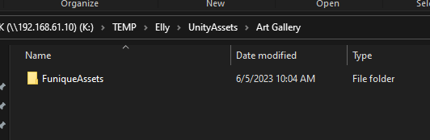

安裝包
使用 Git 專案
在 Github 組織 下尋找 project 開頭的 repository

Clone 到你的資料夾, 以下為範例
git clone https://github.com/Funique2022/project_funique_player.git --branch v1.0
branch 為現在要選取的版本號
或是使用 Github Desktop 進行拉取動作

在根目錄尋找批次檔案

- load 下載所有子模組
- remove 刪除所有子模組
- update 更新所有子模組
有些專案是需要資源的匯入 才會使其成立
這些資源不會放在 git 的雲上面 主要原因是因為容量的限制 這些會放在 NAS 上的 資源資料夾中


如圖 會根據專案名稱下有各種資源資料夾
把這些資料夾丟到專案資料夾的 Assets 中即可